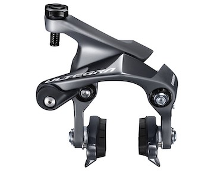
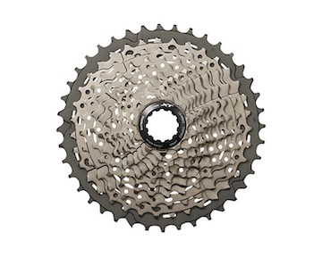
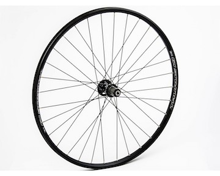
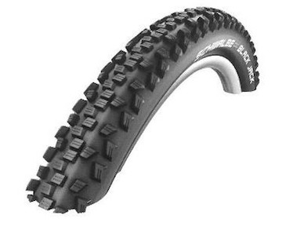

Skov

Kend dit underlag
Når der køres i skoven veksler terrænet en del. Her vil du opleve at støde på skovstier eller grus. Ligeledes kan der findes skovstier, som giver noget tempo og nogle udfordringer igennem de flotte skove. Her skal tungen holdes lige i munden og forsigtighed er vigtigt at tænke på alt efter hvilke spor der køres på. Teknikken ved MTB, er vigtigt at have styr på. Her kan der i forskellige skove findes tekniske baner, downhill, pumptracks osv. Derfor er det vigtigt at forstå og kende sin MTB og hvilket udstyr den har. Herunder er et par overvejelser man skal gøre sig.
Hvad skal du så overveje?
Stel
At tænke over stelstørrelse er ligeledes vigtigt alt efter om du er kvinde eller mand. Kvindestel er som udgangspunkt en smule kortere og yder derfor mere komfort til en kvindekrop. Dog findes der et langt større udvalg af herrestel, men det er en faktor at have med i sine overvejelser.
Bremser
De fleste MTB har skivebremser, da dette er meget mere effektivt, når der skal bremses i skoven. V-bremser findes også, men disse et typisk ikke førstevalg ved MTB-cyckler, da bremserne er mindre effektive, hvorimod skivebremser er velegnede og ikke påvirkes i samme grad som v-bremsen ved vand, snavs og jord. Herunder findes to varianter som er værd at undersøge: 1. Hydrauliske bremser Denne type bremser er baseret på et olietryk, der fungerer mellem -30 og +60 grader, derfor passer denne type bremse godt til det danske klima. Dette betyder også at bremsen slides mindre og nemheden i at bremse er bedre. 2. Mekaniske skivebremser Denne type bremser fungerer med kabeltræk og bremsekraften er sværere. Bremserne er ikke punkt vi vil råde dig til at sparer penge på, hvis ønsket er at benytte den i skoven.
Gear
De fleste komponenter på en MTB, kommer ved at kigge på gearene. Det er her fokus på funktionalitet kommer ind, da der er mange valgmuligheder og de faktorer der spiller ind, er holdbarhed, vægten og præcision. Når det kommer til at vælge gear der passer til terræn i skoven, vil udvendige gear være vores fortrukne valg. Der skal dog nævnes at denne type gear kræver mere vedligeholdelse.
Hjul
Når der skal kigges på hjulstørrelse, handler det om køreoplevelsen samt afvejning mellem fart og kontrol. Som udgangspunkt handler hjulstørrelsen om hvor du skal køre. Hvis det er tekniske ruter og ujævnt terræn så anbefales et mindre hjul. Ved ujævnt terræn og huller i jorden, som findes i skoven, vil anbefalingen ligge på et 29” hvis du er nybegynder. Er du mere øvet er det et personligt valg ud fra flere faktorer.
Dæk
Hvilken form for dæk du skal vælge, betyder også en del for din køreoplevelser når du kører på ujævnt terræn som i de danske skove. Her skal du være opmærksom på mudder, løs jord, huller og rødder som et par eksempler. Derfor har mønsteret samt bredde en stor effekt på din personlige kørerstil. Dæk med mønster er uundværlig ude i skoven, men mønsteret får dig til at køre langsommere på veje og stier. Et helårs-dæk med en god bredde på, vil have et godt greb på det terræn der findes i de danske skove og er velegnet til dette terræn. Oftest vil MTB-kører variere meget i hvad der foretrækkes, da der er ulemper og fordele at finde ved de fleste dæk. Det kan nævnes at en store del, vælger at kører med forskellige typer dæk foran og bagpå for at få den bedste kombination og køreoplevelse.
Affjedring
Affjedring
Når der skal vælges en MTB, som giver en god køreoplevelse på det ujævne terræn der findes i skovene herhjemme, er affjedring en vigtig faktor at kigge på. Der findes forskellige typer af trails og dermed er der også forskellige tekniske egenskaber MTB skal kunne. Der findes her to valg som er vigtigt at sætte sig ind i:
1. Hardtail
En hardtail er mest udbredt, men for at kunne kører i skovens terræn, vil forgaflen altid være affjedret. Denne type cykel er oftest en billigere valgmulighed. Herunder hardtail findes der dog forskellige typer af affjedring, der har en betydning. Forgaflen kan købes med fjederafdæmper, der ikke kræver meget vedligeholdelse men omvendt så er dine muligheder for individuelle justeringer små. Ved at købe luftaffjedring, kræver det en del mere vedligeholdelse og noget teknisk viden, men til gengæld kan den justeres til din individuelle vægt og rebound effekten vil derfor også justeres. Sidstnævnte er værd at investere i, hvis du vil bruge mange timer i de danske skove.
2. Full Suspension
En Full Suspension er fuldt ud affjedret både foran og bagpå. Køreoplevelsen på denne vil være en helt anden, da du vil opleve en anden kontrol over MTB og terræn vil ikke have en betydning for en øm kroppen dagen efter en god tur i skoven. Fuld affjedring giver dig nogle andre køretekniske muligheder, men vejer mere end hardtail samt kræver mere vedligeholdelse.
Som en sidste godt råd, skal du checke om affjedringen har en lock-out. Dette er vigtigt for at undgå ”wobling”. Det giver dig ligeledes mulighed for at kunne benytte MTB andetsteds end skoven. Din køreoplevelse er derfor sikret at blive god.